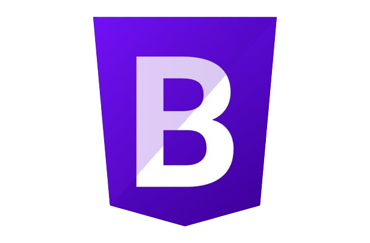

My Top Skills



Soy Jessica Martínez Álvarez, soy una futura bióloga marina, me gusta estar en constante aprendizaje tanto académico como profesional, me considero una artista, debido a que me gusta crear y expresar lo que veo y siento. Mi meta es poder llegar a todas las edades e cultivar conocimiento sobre el área ambiental, para que las personas tengan conocimiento de todo lo que hay por conocer en su país, y al igual que busco desarrollar y contribuir al desarrollo sostenible.
Mis estudios los estoy realizando en la Universidad Autónoma de Yucatán, estoy en las últimas etapas para finalizar mi carrera, pero por motivos de planificación va a tardar más tiempo.
Durante mi recorrido academico he podido trabajar en diversos proyectos, como en el monitoreo de fauna (especialmente aves) en un área natural protegida de Yucatán, también participe en un congreso que se llevo a cabo en Veracruz sobre costas, fue una experiencia realmente gratificante, y más porque pude compartir esta experiencia con personas que aprecio mucho.
Actualmente me encuentro realizando una estancia en el Tijuana, en un área un tanto diferente, que esta siendo un reto pero a su vez un logro personal y academico.